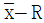
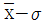
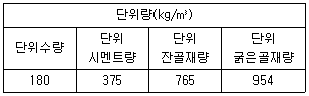
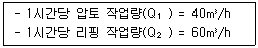
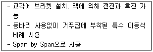
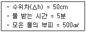
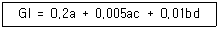
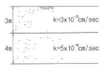
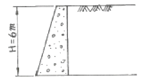

건설재료시험산업기사 (2012-09-15 기출문제)
1과목: 콘크리트공학
1. 콘크리트 타설 및 다지기에 대한 설명으로 틀린 것은?
- 타설한 콘크리트는 거푸집 내에서 횡방향으로 이동시켜서는 안 된다.
- 한 구획내의 콘크리트는 타설이 완료될 때까지 연속해서 타설하여야 한다.
- 내부진동기를 사용하여 진동다지기를 할 때 내부진동기의 찔러 넣는 간격은 일반적으로 1m 이하로 한다.
- 내부진동기를 사용하여 진동다지기를 할 때에는 진동기를 아래층의 콘크리트 속에 0.1m 정도 찔러 넣어야 한다.
(정답률: 79%)

2. 압축강도 시험의 기록이 없는 현장에서 콘크리트의 설계기준 압축강도가 20MPa인 경우 배합강도는?
- 25 MPa
- 27 MPa
- 28.5 MPa
- 30 MPa
(정답률: 78%)
3. 플래트에 고정믹서가 설치되어 있어 각 재료를 계량하고 혼합하여 와넌히 비벼진 콘크리트를 트럭믹서 또는 트럭애지테이터에 투입하여 운반중에 교반하면서 지정된 공사현장까지 배달 공급하는 레디믹스트 콘크리트 제조방식은?
- 센트럴 믹스트 콘크리트
- 쉬링크 믹스트 콘크리트
- 트랜식 믹스트 콘크리트
- 프리팩트콘크리트
(정답률: 81%)
4. 콘크리트 1m3을 만드는 배합설계에서 필요한 골재의 절대용적이 720L 이었다. 잔골재율이 34%, 잔골재 밀도가 2.6g/cm3, 굵은골재 밀도가 2.65g/cm3일 때, 단위굵은골재량을 구하면?
- 1259 kg
- 1236 kg
- 649 kg
- 637 kg
(정답률: 35%)
5. 콘크리트의 동결융해의 반복작용에 대한 내구성을 향상시키기 위한 방법 중 틀린 것은?
- AE제를 사용하여 적정량의 연행공기를 연행시킨다.
- 물-결합재비를 작게 하여 치밀한 콘크리트를 만든다.
- 동일한 공기량일 경우 기포의 크기가 큰 콘크리트를 만든다.
- 제설제 등이 콘크리트 중에 스며들지 않도록 한다.
(정답률: 65%)
6. 콘크리트의 슬럼프 시험에서 슬럼프콘에 콘크리트를 채우기 시작하고 나서 슬럼프콘의 들어 올리기를 종료할 때까지의 시간으로 옳은 것은?
- 1분 이내로 한다.
- 2분 이내로 한다.
- 3분 이내로 한다.
- 4분 이내로 한다.
(정답률: 84%)
7. 프리플레이스트 콘크리트에 대한 설명으로 틀린 것은?
- 잔골재의 조립률은 1.4~2.2의 범위에 있는 것이 좋다.
- 초기강도는 작으나 장기강도는 보통콘크리트 보다 크다.
- 블리딩 및 레이턴스가 적다.
- 굵은골재의 최대치수는 15mm로 한다.
(정답률: 44%)
8. 콘크리트의 중성화 깊이를 예측하기 위한 식에서 중성화 깊이를 C, 중성화 속도계수를 A, 경과 년수를 t 라고 할 때 일반적으로 적용되는 식으로 옳은 것은?
- C = A√t
- C = A · t
- C = A · t2
- C = A · t4
(정답률: 46%)
9. 일평균 기온이 15℃ 이상이고 조강 포틀랜드 시멘트를 사용한 일반 콘크리트의 경우 습윤양생기간의 표준으로 옳은 것은?
- 3일
- 5일
- 7일
- 9일
(정답률: 67%)
10. 알칼리 골재반응 억제 대책과 관계가 없는 것은?
- 포틀랜드시멘트의 등가알칼리량이 0.6% 이하인 저알칼리 시멘트를 사용한다.
- 알칼리 골재반응 억제 효과를 가진 혼합시멘트를 사용한다.
- 콘크리트 중의 알칼리 총랴을 3kg/m3 이하로 제한한다.
- 물-결합재비를 40%이하로 제한한다.
(정답률: 58%)
11. 시공이음은 전단력이 적은 위치에 설치해야 하나, 부득이 하게 전단력이 큰 위치에 시공이음을 설치할 경우, 철근으로 보강할 수 있는데, 철근의 공칭직경이 19mm 인 경우 철근의 최소 정착길이는?
- 190mm
- 285mm
- 380mm
- 475mm
(정답률: 64%)
12. 콘크리트의 재료분리 현상을 줄이는 방법에 대한 설명으로 틀린 것은?
- 잔골재율을 줄인다.
- 플라이애시를 혼합한다.
- 물-결합재비를 작게 한다.
- 입자가 둥근 골재를 사용한다.
(정답률: 24%)
13. 경사슈트를 사용하여 콘크리트를 운반할 경우 슈트의 경사는 콘크리트가 재료분리를 일으키지 않을 정도로 하여야 한다. 이때 일반적인 경사로서 가장 적당한 것은?
- 수평 2에 대하여 연직 1정도
- 수평 1에 대하여 연직 1정도
- 연직 2에 대하여 수평 1정도
- 연직 3에 대하여 수평 1정도
(정답률: 63%)
14. 프리스트레스 콘크리트에서 프리스트레스 도입 후 시간의 경과에 의해 발생하는 프리스트레스 감소원인이 아닌 것은?
- 콘크리트의 건조수축
- 콘크리트의 탄성변형
- PS강재의 릴랙세이션
- 콘크리트의 크리프
(정답률: 23%)
15. 다음 관리도의 종류 중 정규분포이론을 적용한 계량값의 관리도에 속하지 않는 것은?

관리도(평균값과 범위의 관리도)
관리도(평균값과 표준편차의 관리도)- x 관리도(측정값 자체의 관리도)
- P 관리도(불량률 관리도)
(정답률: 75%)
16. 뿜어붙이기 콘크리트의 장점으로 옳지 않은 것은?
- 거푸집이 필요없고, 급속시공이 가능하다.
- 비교적 소규모로 운반 가능한 기계설비로 시공할 수 있다.
- 급결제의 첨가에 의해서 조기에 강도를 발현시킬 수 있다.
- 작업시 분진이 발생하지 않는다.
(정답률: 75%)
17. 콘크리트 재료의 계량에 있어 혼화재의 계량오차의 범위는 몇 % 이내인가?
- ±1%
- ±2%
- ±3%
- ±4%
(정답률: 73%)
18. 고강도 콘크리트에 사용되는 굵은 골재의 최대 치수에 대한 설명으로 옳은 것은?
- 굵은 골재의 최대 치수는 80mm 이하로 하여야 한다.
- 굵은 골재의 최대 치수는 40mm 이하로서 가능한 25mm 이하로 하여야 한다.
- 철근 최소 수평 순간격의 1/3 이내의 것을 사용하여야 한다.
- 철근 최소 수평 순간격의 2/3 이내의 것을 사용하여야 한다.
(정답률: 59%)
19. 굵은골재의 최대치수, 잔골재율, 잔골재의 입도, 반죽질기 등에 따르는 마무리하기 쉬운 정도를 나타내는 굳지 않은 콘크리트의 성질은?
- 성형성(plasticity)
- 내구성(durability)
- 워커빌리티(workability)
- 피니셔빌리티(finishability)
(정답률: 90%)
20. 아래 표는 공기량 5%의 AE콘크리트의 시방배합표이다. 이 콘크리트 배합의 잔골재율은? (단, 잔골재 표면거조 포화상태 밀도 : 2.55g/cm3, 굵은골재 표면건조 포화상태 밀도 : 2.65g/cm3, 시멘트 밀도 : 3.14g/cm3)

- 42.5%
- 44.5%
- 45.5%
- 55.5%
(정답률: 39%)
2과목: 건설재료 및 시험
21. 다음 중에서 폭발력이 가장 강하고 수중에서도 폭발할 수 있는 다이너마이트(dynamite)는?
- 규조토 다이너마이트
- 교질 다이너마이트
- 스트레이트 다이너마이트
- 분말상 다이너마이트
(정답률: 86%)
22. 다음 중 석유 아스팔트가 아닌 것은?
- 스트레이트 아스팔트
- 그라하마이트
- 블론 아스팔트
- 용제추출 아스팔트
(정답률: 59%)
23. 골재의 동결융해에 대한 내구성을 판별하는 시험은?
- 골재 안정성 시험
- 골재형상 시험
- 단위용적 질량 시험
- 골재 유해물 함량시험
(정답률: 63%)
24. 아스팔트의 침입도 시험에서 표준침이 7mm 관입하였다면 침입도 값을 얼마인가?
- 0.7
- 7
- 70
- 700
(정답률: 67%)
25. 골재의 조립률을 구할 때 사용되는 체의 호칭치수가 아닌 것은?
- 40mm
- 10mm
- 0.3mm
- 0.07mm
(정답률: 69%)
26. 콘크리트용 골재에 대한 설명으로 틀린 것은?
- 적당한 입도의 골재를 사용하면 콘크리트의 단위수량이 감소된다.
- 모래의 유기불순물은 수산화나트륨에 융해하여 착색하는 것을 이용한 비색시험에 의해 판정할 수 있다.
- 콘크리트의 압축강도는 물-시멘트비가 일정한 경우 굵은골재 최대치수가 커짐에 따라 증가한다.
- 조립률이 같은 골재라도 서로 다른 입도를 가질 수 있다.
(정답률: 32%)
27. 플라이애시의 품질시험을 위한 시험 모르타르에 대한 설명으로 옳은 것은?
- 보통 포틀랜드 시멘트와 시험의 대상으로 하는 플라이애시를 질량으로 3:1의 비율로 사용하여 만든 모르타르
- 중용열 포틀랜드 시멘트와 시험의 대상으로 하는 플라이애시를 질량으로 2:1의 비율로 사용하여 만든 모르타르
- 중용열 포틀랜드 시멘트와 시험의 대상으로 하는 플라이애시를 질량으로 3:1의 비율로 사용하여 만든 모르타르
- 보통 포틀랜드 시멘트와 시험의 대상으로 하는 플라이애시를 질량으로 2:1의 비율로 사용하여 만든 모르타르
(정답률: 55%)
28. 시멘트계 복합재료용 섬유 중 무기계 섬유에 포함되지 않는 것은?
- 폴리프로필렌섬유
- 강섬유
- 유리섬유
- 탄소섬유
(정답률: 78%)
29. 목재의 강도 중 가장 큰 것은?
- 섬유에 직각방향의 압축강도
- 섬유에 직각방향의 인장강도
- 섬유에 평행방향의 압축강도
- 섬유에 평행방향의 인장강도
(정답률: 75%)
30. 석재의 모양에 따른 종류에 있어서 나비가 두께의 3배 미만이고, 일정한 길이를 가지고 있는 직육면체형의 석재로 주로 구조용으로 쓰이는 것은?
- 각석
- 판석
- 견치석
- 사고석
(정답률: 66%)
31. 다음 중 강재의 인장시험에서 알아내기 어려운 것은?
- 인장강도
- 파단연신율
- 항복강도
- 인성한도
(정답률: 62%)
32. 콘크리트용 혼화재료와 그 특성에 대한 관계가 틀린 것은?
- 플라이애시 – 포졸란 작용
- 규산백토 – 잠재수경성
- 공기연행제 – 계면활성작용
- 지연제, 급결제 – 응결·경화시간 조절
(정답률: 49%)
33. 합판의 특징에 대한 설명으로 틀린 것은?
- 동일한 원재로부터 많은 정목판과 나무결 무늬판이 제조된다.
- 외관이 아름다운 판을 비교적 싸게 구할 수 있다.
- 직면으로 된 판만 제작 가능하다.
- 팽창, 수축에 의한 결점이 없고 방향에 따른 강도의 차이가 없다.
(정답률: 60%)
34. 석재의 분류방법에서 화성암에 속하지 않는 것은?
- 화강암
- 섬록암
- 안산암
- 응회암
(정답률: 71%)
35. 시메트의 응결경화 촉진제로서 쓰이는 환화재료는?
- 포졸리스
- 리그닌설폰산염
- 염화칼슘
- 플라이 애쉬
(정답률: 71%)
36. 시멘트의 비중은 콘크리트의 단위 무게 계산과 배합설계 등을 위해 필요하며 또한 시멘트의 성질을 판정하는데 큰 역할을 한다. 다음 설명 중 시멘트의 비중이 작아지는 경우가 아닌 것은?
- 시멘트가 풍화했을 때
- 클링커(clinker)의 소성이 불충분할 때
- 실리카(silica)나 산화철이 많이 들어갔을 때
- 오랫동안 저장했을 때
(정답률: 71%)
37. 비교적 연한 스트레이트 아스팔트에 적당한 휘발성 용제를 가하여 점도를 저하시켜 유동성을 좋게 한 아스팔트는?
- 고무혼입 아스팔트
- 컷백 아스팔트
- 블론 아스팔트
- 매스틱 아스팔트
(정답률: 71%)
38. 다음 폭약중에서 동해(凍害)를 입기에 가장 쉬운 것은?
- 칼릿
- 니트로글리세린
- ANFO
- T.N.T
(정답률: 71%)
39. 시멘트의 강도 시험(KS L ISO 679)에 따라 시멘트 모르타르의 압축강도 시험을 실시하고자 할 때 모르타르의 제조방법으로 옳은 것은?
- 질량에 의한 비율로 시메트와 표준사를 1:2의 비율로 하며, 물-시멘트비는 40%로 한다.
- 질량에 의한 비율로 시메트와 표준사를 1:2.45의 비율로 하며, 물-시멘트비는 50%로 한다.
- 질량에 의한 비율로 시메트와 표준사를 1:2.7의 비율로 하며, 물-시멘트비는 40%로 한다.
- 질량에 의한 비율로 시메트와 표준사를 1:3의 비율로 하며, 물-시멘트비는 50%로 한다.
(정답률: 81%)
40. 콘크리트 내부에 독립된 미세기포를 발생시켜 콘크리트의 워커빌리티 개선과 동결융해에 대한 저항성을 증대시키기 위해 사용되는 혼화제는?
- AE제
- 응결경화촉진제
- 지연제
- 기포제
(정답률: 77%)
3과목: 건설시공학
41. 흙쌓기 공사를 할 때 공사 중의 흙의 압축 또는 공사 후의 흙의 수축이나 지반의 침하를 예상하여 미리 계획된 높이보다 흙을 더 쌓는 것을 무엇이라 하는가?
- 더돋기
- 시공기면
- 소단
- 안식각
(정답률: 55%)
42. 다음의 말뚝 중에서 항타기를 사용하지 않는 말뚝은 어느 것인가?
- 나무 말뚝
- RC 말뚝
- H형강 말뚝
- Benoto 말뚝
(정답률: 73%)
43. 깊은다짐, 점성토 다짐 및 고함수비 지반다짐에 사용하는 탬핑롤러에 속하지 않는 것은?
- sheeps foot roller
- macadam roller
- grid roller
- tapper foot roller
(정답률: 54%)
44. 용수, 배수, 운하 등 성질이 다른 수로가 교차하지만 합류시킬 수 없을 때 또는 수로교로서는 안될 때 일반적으로 사용되는 관거는?
- 사이펀관거
- 관암거
- 다공관거
- 함거
(정답률: 70%)
45. 시멘트 콘크리트 포장의 미끄럼 저항성을 크게 하기 위하여 실시하는 표면 마무리는?
- 초벌마무리
- 거친면마무리
- 평탄마무리
- 간이마무리
(정답률: 79%)
46. 터널 굴착공법 중 TBM공법의 장점에 대한 설명으로 틀린 것은?
- 기계굴착이므로 주변 암반에 대한 이완이 적다.
- 단면을 분할하여 굴착하므로 토질변화가 많은 지형에 적합하다.
- 여굴이 거의 발생하지 않으므로 라이닝의 두께를 얇게 할 수 있다.
- 기계에 의한 굴착이므로 작업환경이 양호하며 낙반 등의 사고위험이 적다.
(정답률: 75%)
47. 펌퍼 준설선의 특징에 대한 설명으로 틀린 것은?
- 준설과 매립을 동시에 할 수 있다.
- 암석 또는 단단한 토질에 주로 사용한다.
- 시공단다가가 비교적 저렴하다.
- 준설능력이 비교적 크다.
(정답률: 41%)
48. 아래 표와 같은 조건에서 불도저로 압토와 리핑 작업을 동시에 실시할 경우 시간당 작업량은?

- 24 m3/h
- 28 m3/h
- 37 m3/h
- 50 m3/h
(정답률: 83%)
49. 불도저로 운반거리가 50m 이고, 밀어가는 속도 V1=36m/min, 후퇴하는 속도 V2=42m/min이고, 또 대기시간 t=0.25min 이라 할 때 싸이클 타임(cm)은?
- 2.52min
- 2.66min
- 2.75min
- 2.83min
(정답률: 54%)
50. 다음 중 터널굴착에서 락볼트의 작용에 해당하지 않는 것은?
- 매다는 작용
- 기둥의 형성 작용
- 보강 작용
- 보의 형성 작용
(정답률: 34%)
51. 말뚝박기에 대한 일반적인 설명으로 옳은 것은?
- 말뚝기초는 주변족에서 중심쪽으로 박아 나간다.
- 해안선 같은 곳에서는 바다쪽에서 육지쪽으로 박아 나간다.
- 기존 건물가까이에 박을 때는 건물 가까운 쪽에서부터 박는다.
- 말뚝박기는 1회 타격관입량이 30mm 이내일 때 중지한다.
(정답률: 64%)
52. 아래의 표는 장대교 시공법의 특징에 대한 설명이다. 다음 중 어느 공법에 대한 설명인가?

- FSM 공법
- FCM 공법
- MSS 공법
- ILM 공법
(정답률: 52%)
53. 아스팔트 포장 중 실 코트(seal coat)의 목적이 아닌 것은?
- 포장면의 수밀성 증대
- 포장면의 미끄럼저항 증대
- 포장면의 내구성 증대
- 포장면의 모관상승 차단
(정답률: 55%)
54. 수저(水底) 터널의 굴착공법으로서 옳지 않은 것은?
- 침투압 공법
- 쉴드 공법
- 잠함 공법
- 침매 공법
(정답률: 44%)
55. 일반적인 필댐의 재료가 가져야 하는 성질에 대한 설명으로 틀린 것은?
- 입도의 배합이 적당하며, 연속적인 안정성을 가질 것
- 투수계수는 최대수두에 대하여 허용범위 내에 있을 것
- 수축비가 적고, 전단강도 및 적당한 소성을 가질 것
- 물에 융해되는 성분을 포함한 성질을 가질 것
(정답률: 65%)
56. P.C 말뚝에 관한 설명으로 틀린 것은?
- 균열 발생이 적으므로 강재가 부식될 우려가 없고 내구성이 크다.
- P.C 강선에 의한 탄성이 크므로 휨을 받을 때의 처짐량이 크다.
- RC 말뚝에 비해 운반이 용이하다.
- 이음부의 시공이 쉽고 신뢰성이 있다.
(정답률: 33%)
57. 말뚝을 지반에 타입할 때 무진동, 무소음으로 윗쪽에 공간이 없을 때 쓰는 공법은?
- 타입법
- 사수법
- 압입법
- 진동법
(정답률: 67%)
58. 품질관리사이클의 순서로서 옳은 것은?
- 계획 → 검사 → 조치 → 실시
- 계획 → 검사 → 실시 → 조치
- 계획 → 실시 → 조치 → 검사
- 계획 → 실시 → 검사 → 조치
(정답률: 60%)
59. 다목적 댐과 같이 상류 측에 콘크리트로 차수벽을 만들고 중앙 및 하류 측은 석괴로 쌓아 올리는 댐의 형식은?
- 표면 차수벽형
- 내부 차수벽형
- 코어형
- 록필형
(정답률: 70%)
60. PERT기법에 의한 공정관리 기법에서 낙관적 시간이 5일, 정상 시간이 8일, 비관적 시간이 11일 일 때 공정상의 기대시간은 얼마인가?
- 6일
- 7일
- 8일
- 9일
(정답률: 53%)
4과목: 토질 및 기초
61. 다음 토질 시험 중 도로의 포장 두께를 정하는데 많이 사용되는 것은?
- 표준관입시험
- 삼축압축시험
- C.B.R 시험
- 다짐시험
(정답률: 69%)
62. 암석시편을 얻기 위하여 시추조사를 실시하여 1.5m를 굴진하였다. 회수된 암석시편의 길이가 0.8m 이며 그중 길이 10cm 이상되는 시편길이의 합이 0.5m 라고 할 때 이 암석시편의 회수율(rock recovery)은?
- 47%
- 53%
- 33%
- 67%
(정답률: 40%)
63. c=2.2t/m2, ø=25°, γt=1.8t/m3이 지반에 2.5×2.5m의 정사격형 기초가 근입깊이 1.2m에 놓여있고 지하수위 영향은 없다. 이때 정사각형 기초의 허용하중을 구하면? (단, Terzaghi의 지지력공식을 이용하고 안전율은 3, 형상계수 α=1.3, β=0.4 이고, Nc=25.1, Nq=12.7)
- 120 t
- 243 t
- 343 t
- 486 t
(정답률: 29%)
64. 단며적 100cm2, 길이 30cm 인 모래 시료에 대한 정수위 투수시험결과가 다음과 같을 때 이 흙의 투수계수는?

- 0.001 cm/sec
- 0.0⑤ cm/sec
- 0.01 cm/sec
- 0.⑤ cm/sec
(정답률: 33%)
65. 점성토 지반에 사용하는 연약지반 개량공법으로 거리가 먼 것은?
- Sand drain 공법
- 침투압 공법
- Vibro floatation 공법
- 생석회 말뚝 공법
(정답률: 63%)
66. 실내에서 투수성이 매우 낮은 점성토의 투수계수를 알 수 있는 실험방법은?
- 정수위 투수실험법
- 변수위 투수실험법
- 일축 압축 실험
- 압밀 실험
(정답률: 26%)
67. 다짐에 대한 설명으로 틀린 것은?
- 점토를 최적함수비(Wopt)보다 작은 함수비로 다지면 분산구조를 갖는다.
- 투수계수는 최적함수비(Wopt) 근처에서 거의 최소값을 나타낸다.
- 다짐에너지가 클수록 최대건조단위중량(γdmax)은 커진다.
- 다짐에너지가 클수록 최적함수비(Wopt)는 작아진다.
(정답률: 36%)
68. 흙의 애터버그(Atterberg)한계는 어느 것으로 나타내는가?
- 공극비
- 상대밀도
- 포화도
- 함수비
(정답률: 30%)
69. 어떤 흑의 직접전단 시험을 하여 수직응력 6.0 kg/cm2일 때 4.4kg/cm2의 전단강도를 얻었다. 이 흙의 점착력이 1.0kg/cm2이라면 이 흙의 내부마찰각은?
- 57.5°
- 36.2°
- 32.1°
- 29.5°
(정답률: 38%)
70. 군지수(Group index)를 구하는 아래 표와 같은 공식에서 a, b, c, d에 대한 설명으로 틀린 것은?

- a : No.200체를 통과율에서 35% 뺀 값으로 0~40의 정수만 취한다.
- b : No.200체를 통과율에서 15% 뺀 값으로 0~40의 정수만 취한다.
- c : 액성한계에서 40%를 뺀 값으로 0~20의 정수만 취한다.
- d : 소성한계에서 10%를 뺀 값으로 0~20의 정수만 취한다.
(정답률: 24%)
71. 압밀 시험 결과의 정리에서 √t 방법, logt 방법의 곡선으로부터 직접 구할 수 있는 것은?
- 압밀계수
- 압축지수
- 압축계수
- 체적변화계수
(정답률: 59%)
72. 말뚝의 정재하시험에서 하중 재하방법이 아닌 것은?
- 사하중을 재하하는 방법
- 반복하중을 재하하는 방법
- 반력말뚝의 주변 마찰력을 이용하는 방법
- Earth Anchor 의 인발저항력을 이용하는 방법
(정답률: 44%)
73. 점토지반을 프리로딩(Pre-loading)공법 등으로 미리 압밀시킨 후에 급격히 재하할 때의 안정을 검토하는 경우에 가장 적당한 전단시험 방법은?
- 비압밀 비배수(UU) 시험
- 압밀 비배수(CU) 시험
- 압밀 배수(CD) 시험
- 압밀 완속(CS) 시험
(정답률: 70%)
74. rod에 붙인 어떤 저항체를 지중에 넣어 타격관입, 인발 및 회전할 때의 저항으로 흙의 전단강도 등을 측정하는 원위치 시험을 무엇이라 하는가?
- 보링(boring)
- 사운딩(sounding)
- 시료채취(sampling)
- 비파괴 시험(NT)
(정답률: 84%)
75. 그림과 같이 2개층으로 구성된 지반에 대해 수평방향 등가투수계수는?

- 3.89×10-4 cm/sec
- 7.78×10-4 cm/sec
- 1.57×10-3 cm/sec
- 3.14×10-3 cm/sec
(정답률: 34%)
76. 지표면에 25t 의 집중하중이 작용하는 경우, 깊이 5m, 하중작용위치에서 2.5m 떨어진 점의 연직응력을 Bouinesq의 식으로 구한 값은? (단, 영양계수(I)는 0.273을 적용한다.)
- 1.092 t/m2
- 0.876 t/m2
- 0.546 t/m2
- 0.273 t/m2
(정답률: 24%)
77. 연약한 점토지반(ø=0)의 토질시험 결과 일축압축강도는 4.5t/m2, 흙의 단위중량은 1.8t/m3로 측정되었다. 이 점토의 한계고는?
- 5m
- 4m
- 3m
- 2m
(정답률: 18%)
78. 10개의 무리 말뚝기초에 있어서 효율이 0.8, 단항으로 계산한 말뚝 1개의 허용지지력이 10t일 때 군항의 허용지지력은?
- 50t
- 80t
- 100t
- 125t
(정답률: 83%)
79. 지표면은 수평, 벽체 배면은 연직, 흙의 내부마찰각 ø=30°, 흙의 단위중량 γ=1.8t/m3일때 높이 H=6m인 옹벽에 작용하는 주동토압의 합력 PA는?

- 10.8 t/m
- 12.6 t/m
- 14.3 t/m
- 15.5 t/m
(정답률: 46%)
80. 함수비 18%인 흙 2000g이 있다. 이 흙의 함수비를 25%로 만들려면 물을 얼마나 가하여야 하는가?
- 96.4 g
- 102.6 g
- 113.1 g
- 118.6 g
(정답률: 25%)